GIANT TREE
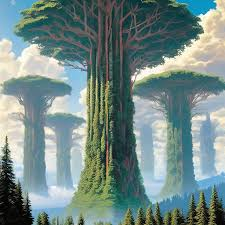
Introduction
The giant tree theory states that many geological formations (e.g. the Devil's Tower) are actually petrified remains of an extinct clade of huge trees that went extinct and calcified, turning into these formations. The proof of their existence is usually said to be the Bible, which mentions giant trees, and the flag of Lebanon, which according to some conspiracy theories shows one of those trees.
When we look at some of the world’s most famous mountains, their shape can often resemble massive tree stumps. From the flat-topped formations to the intricate, bark-like textures, it raises the question: Could these mountains have once been enormous trees in the distant past?
All these massive "plateaus" and many mountains that you see are the remains of ancient Silica trees. There once were trees reaching higher than the clouds on earth, the largest of which was the tree of life at the center of the plane.
Some theorists believe these formations—like Devil’s Tower in Wyoming—are not just random geological structures but remnants of ancient Silicon Trees, colossal life forms made from silicon rather than carbon. If true, this would suggest that a very different ecosystem, with massive silicon-based trees, existed long before recorded history.
The theory about giant silicon trees was first created in 2016 by Russian YouTuber and conspiracy theorist Ludin Rusi. The theory is connected to Flat Earth conspiracies, but did not actually originate as one.
Literary
After the climate change, all plants petrified, unlike animals which somehow managed to find shelter. Thus, the plants no longer showed any signs of life, and before the silicon-like organisms could lose their elasticity, the planet was subjected to a massive aerial bombardment. The blast wave uprooted everything with roots.
The Silica Era Thrived In The Golden Age. There Was A Much Higher Atmospheric Gradient Pressure. Men Of Giant Stature, Silica Trees That Reached The Skies, Mega Mushrooms, Enormous Weaponry And Megalithic Structures Was Of Abundance During The Pre Flood World. What We Are Left With Are Remanences That Stood The Test Of Time..
The network of giant, living silica trees on Earth was cut down long ago, and their materials were used for purposes we are not allowed to know about. Now, all that remains are the trunks of giant trees, which we are told in school are "hills," and the dust from grinding those trunks has formed vast sandy deserts composed of silica crystals. The movie "Avatar" showed us exactly how the living Earth was destroyed so that resources and minerals could be extracted.
The living network of giant silica trees that once extended all over the plane and high above the clouds has all been cut down. We now live in a completely artificial environment- I would even go as far as to call it a terrarium. They have waged full out war on Mother Earth for hundreds if not thousands of years. Today we drill down & pull the blood of the earth from her veins and burn it in metal machines. Oil is the blood of the earth make no mistake. The term "fossil fuel" came about at the 1892 Geneva Convention where Rockefeller's paid scientists argued that because oil is composed of Hydrogen carbon & oxygen it must be residue of living matter and therefore "fossil fuel
Life on earth was silica based before it was carbon (666) based. Silica, like crystals, stores information and conducts energy. This is why you see tons of giant crystals filling the "caves" on earth because these cave systems would have been created by the roots of giant silica trees
Last month a video was posted on Threads by someone calling themselves ‘bretfebiblejesus’ (a bit of a giveaway) purporting to show a Giant Tree stump. The video’s caption said "Giant Tree stump in Antarctica from before the Flood when this terrarium’s climate was different? The Angels cut them down.
Again we have many cultures depicting of a sub terrain underground system. A completely different world than what we know of today all together. Since we know that mountains are nothing more but giant tree stumps, then you can correlate Mt. meru and The tree of life are one in the same.. The Holy Crater (Grail) .
The waterfall is the primary source of water, springing from the depths of our planet. What mainstream understanding tells us about waterfalls is only a secondary source: rain clouds. For those who open their eyes, the truth becomes clear. The connection between these waterfalls and their ancient tree trunks is increasingly intertwined with ancient folklore about Earth's past life cycles, and how once, mighty trees gave life and nourished all the wandering animals. Once they reached the sky and rose above the land, they formed canopies of water vapor.
What if the hills and mounds we see scattered across the planet—like Devil's Tower in Wyoming—were not just natural rock formations, but petrified trunks of ancient, majestic trees that were once alive? Trees that stretched beyond the clouds, connecting the sky to the earth in ways we have forgotten.From a scientific lens, what remains of these “geological wonders” defies typical volcanic activity. The hexagonal columns of Devils Tower resemble the crystalline structure of a living organism — not volcanic basalt. No eruption, no crater. Just a stump that matches the structure of a severed living being. This anomaly has sparked global curiosity.
From a spiritual and multidimensional level, these weren’t just trees — they were living antennas of cosmic consciousness. Their massive root systems connected with the crystalline grid of Earth, while their crowns received and transmitted energy from celestial realms. These “World Trees” once held the memory of the planet, acted as spiritual libraries, and supported elevated human consciousness
These trees purified the air with unimaginable efficiency. With the fall of these giants, oxygen levels dropped and so did humanity’s psychic and spiritual connection to Gaia. Our vibrational state lowered. The veil between realms thickened. These trees helped hold the resonance of Unity Consciousness, and when they fell, so did our collective awareness.
These ancient trees are not just stories from mythology. They are deeply embedded in the spiritual memory of many cultures — from Yggdrasil of Norse legend to the Tree of Life in many sacred texts. They were real, organic, conscious bridges between the stars and our Earth.
Some researchers say that the entire Earth was once filled with what they call "Megaflora de Silicio" (Silicon Megaflora), and that an ancient civilization (or giants) cut down the giant trees. The "trunks" we see today in the form of mountains remain.
Some researchers say that long underground caves and tunnels (such as Derinkuyu in Türkiye, the Ellora Caves in India, or lava tubes) are the roots of these petrified trees.
Some thinkers say that these trees were cut down during the time of Noah in order to build an ark with the help of angels.
Ancient trees are repositories of information, databases, or hard drives, in modern terms. Everything that happens on the planet is recorded in the trees' information portal. Anyone with good sense can enter this forest and easily access any information about the past simply by touching a tree trunk. The power that flows through touch
Take Mount Cape Town, Africa, for example. Its dimensions are truly staggering. Multiply the diameter of the plateau (3 km) by 20, and the height of this African tree is 60 km! That's ten times taller than the Devil's Tower, so the idea of a tree trunk in Cape Town wouldn't even cross our minds.
Location
Petrified Forest National Park America
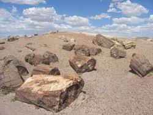
The Petrified Forest National Park in Arizona (USA) is a famous geological site containing petrified tree trunks that are about 225 million years old from the Late Triassic period, where organic wood has been transformed into colored quartz by the process of permineralization.
The park is considered "conclusive proof" of a secret Earth history, where it was covered in giant forests before a catastrophe (such as a flood or divine punishment). This theory began with a 2016 Russian YouTube video titled "There are no forests on Flat Earth Wake Up," and it was linked to the Flat Earth theory and the Mudflood theory (the reburial of ancient civilizations).
Some scientists say the logs in the park (which appear as colorful crystals) are branches or trunks of enormous trees, kilometers tall, made of silicon (not carbon), that covered the earth in the "Silicon Age" before the Flood. The petrification is not a natural process, but rather a "replacement" of crystalline energy, evidence of ancient extraction of minerals (such as gold and coal) from within them. The park itself is a "graveyard" for that forest, not a natural park, and the true history is being concealed to be presented as a "fake geological museum."
This has been linked to texts such as Zechariah 11:2 ("Woe to the cedars, for the cedars have fallen") or the Book of Enoch, where these trees were the "trees of life" cut down by fallen angels or giants to build Noah's ark before the flood. They add that the roots formed networks of caves and underground tunnels, and that the valleys were ancient mines.
They see the colors of the trunks (red, orange, purple) as evidence of "crystal energy," and that Silicon Valley was named so because it was an "old silicon mine."
Some argue that its shape proves it was cut like ordinary trees using fine saws and that it wasn't broken, meaning it has no connection to the volcano or any other theories.
Some say that these shapes are not tree trunks but rather branches and twigs of silica trees.
The Devil's Tower
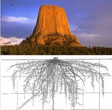
The Devil's Tower is a petrified tree. True petrified wood forms when trees are buried under sediment, and mineral-rich groundwater flows through the remains, depositing minerals such as silica, calcite, and iron into the tree's cells, turning the wood to stone. One of the most famous sites for petrified trees is Petrified Forest National Park in Arizona, known for its large and well-preserved examples of petrified wood.
Lakota Sioux (Devil's Tower), Wyoming, USA. Can you understand why many mountains are sacred to native peoples? Millions of years ago, there were gigantic silicon trees that could exceed 60 kilometers in height and stored data about the planet. It is believed that the mountain known as "Devil's Tower" is the base of one of these trees, which existed all over the planet and that, somehow, for reasons still unknown, were felled.
Seismological studies using photographs have revealed a gigantic root system beneath the "Devil's Tower" in the USA.
The Sioux tribes have many stories about bears and how they were created. One story tells of a giant bear driving two girls to the top of a rock. A great spirit saw this and caused the rock to grow, so the bear scratched its side, trying to reach them. The Kyowa believe that a group of seven girls were driven away, and the rock began to grow, so the bear scratched it, trying to reach them. The Lakota, on the other hand, found the rock as it was and believed that a bear had scratched it.
That big tree stump is just the reminder of the ancient times where elvenkind used to rule over this world, before their superiors rose to power and erased them from the earth, along the other magical species. It's the remains of the great elven life tree
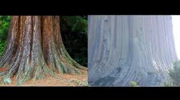
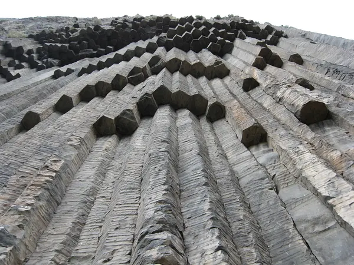
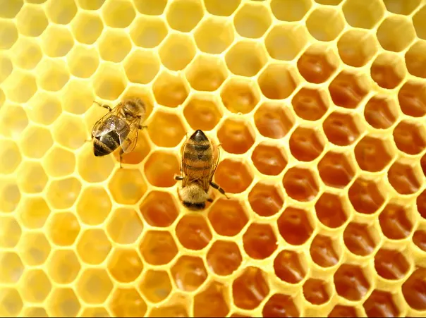
The shape of the Devil's Tower, or its imaginary pillars, is not that of rocks formed by a volcano. The pillars are arranged in a series of hexagonal lines, like vertical pipes or hoses. The hexagonal shape is also found in ice crystals, beehives, and some types of wasps. If we consider a tree trunk, we find it is hexagonal. In the mountain, the pillars or fibers appear to have no difference in height but are close together, mirroring the structure of tree trunk fibers. Furthermore, these pillars are covered by a thin outer layer, similar to the fibers themselves. This layer, called fascia, is a thin membrane of fibrous tissue. Some of the pillars or fibers also slant beneath the tower, mirroring the fibers in a tree, which do not extend vertically but gradually curve to form the properties of a root.
Mathematically, if we multiply the width of the Devil's Tower tree, which is 300 meters, by 20 meters (an approximate height, since the width must be more than half the length), we take 20. The result is six kilometers, which contradicts the Earth's sphericity, gravity, and rotation.
Giant's Causeway
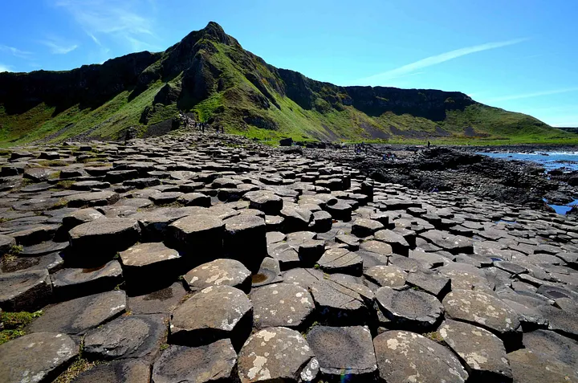
In these ruins, we find geometric shapes similar to the hexagon, which are the same shapes found in the Devil's Tower.
It's a similar giant tree trunk, but it barely protrudes from the ground. The tree grew right on the seashore. The Giant's Causeway contains 40,000 pillars of astonishing geometric dimensions—even the bees envy its scale! Naturally, this natural wonder was declared a national park by some clever people.
It is a giant tree trunk cut by laser. The hexagonal columns are fossilized silicon wood fibers.
Just 200 years ago, the Giant's Causeway was described as a giant tree trunk in travelogues. Then, in the 19th century, history was rewritten.
The columns extend under the sea for kilometers; "the roots continue under the ocean."
Research
These trees were the reason the Earth was covered like one huge jungle in the distant past. Deserts did not exist. The oxygen levels were much higher and the water levels were a lot lower. These ancient silicon trees reached the skies. Blotting out the Sun with its vapor water canopy while continuously being life givers of all those that lived below.
A 1909 newspaper report from North Dakota stated, "A petrified tree trunk with a circumference of 60 feet (about 18 meters), part stone and part coal, from an era with a tropical climate, has been discovered."
Recent studies have revealed a vast underground tunnel system beneath the Devil's Tower, extending deep into the earth. The tunnel network becomes clearer when one realizes it was constructed from the roots of these ancient, powerful, and massive trees. Many Toltec pottery depicting giant crocodiles/creeps likely represented colossal quarrying machines, similar to those we still use today. Ancient peoples described their experiences in relation to their surrounding environment. We have numerous cultures that depict an underground system—a world entirely different from what we know today. Connections can be drawn between moissanite, the craters, and the petrified trees mentioned, as moissanite is abundant around these sites. Combined with basalt columns resembling the hexagonal fibers of modern trees, all these observations are quite compelling. And a significant number of these silicon-like trees still exist throughout our world.
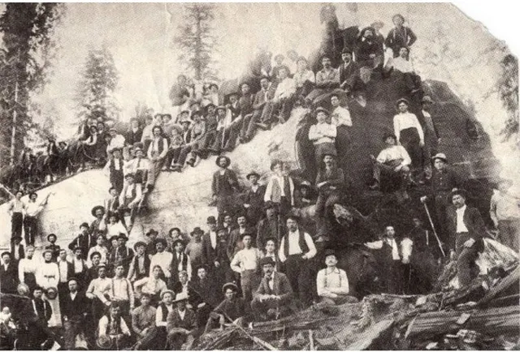
This is the brutal logging of California redwoods (from the 1880s to the 1920s), which miraculously survived the aerial bombardment of 1816. Imagine how many years it took for a tree to grow to this size! Then came the monsters of chainsaws and axes.
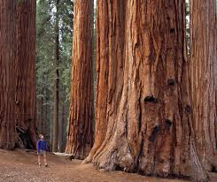
Sequoia National Park doesn’t just make you feel small — it makes you feel ancient and brand new all at once. These trees have seen everything. Some of them are over 3,000 years old. They’ve survived fires, storms, droughts, and the passing of entire civilizations. And yet here they are — silent giants, still growing.
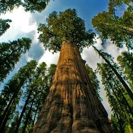
The tallest tree in the world is Hyperion, a coastal sequoia (Sequoia sempervirens) located in California's Redwood National Park. It stands 115.5 meters (379.1 feet) tall. Sequoia trees are among the tallest and oldest trees on Earth.
This "tree" is a geological feature called a "nonatac," which is simply a rocky outcrop protruding from the ice sheet, and its base is the Sanai IV Antarctic Station. The "giant tree" is made of igneous rock.
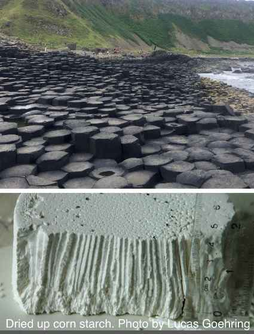
Regular hexagonal rock columns are, to a large extent, prominent geological structures. The top image is of the famous Giant's Causeway in Northern Ireland. Much of what we know about how these structures form comes from experiments conducted on materials such as cornstarch, which also forms these patterns as it dries. Initial cracks develop on surfaces and progress toward the center of the flow after the solidification front, forming a lower and an upper row, although the lower row is usually larger and more developed, occupying the bottom half to two-thirds of the flow, as illustrated in the inverted piece of cornstarch. This is similar to the cracks in trees and rocks.
Almost every civilization has the same story: there were giant trees (cedar, Yggdrasil, Tree of Life, Tree of Tuba…) that reached to the sky or covered the earth. Humans, fallen angels, or giants cut them down to benefit from them (wood, metals, energy). The cutting angered the god/gods → a flood, darkness, or the end of a golden age occurred.
Holy Books
The Holy Bible
2 Kings 3:25: (So they destroyed the cities, and each one threw a stone on every good piece of land and filled it. They blocked all the springs of water and cut down all the good trees, so that nothing remained in Kir-hareseth but its stones. But the archers circled around it and shot.) This verse speaks of the war waged by Jehoshaphat, king of Judah, and Joram, king of Israel and king of Edom, against Moab. After God withheld water from them and then granted them a miraculous victory, they destroyed the Moabite cities in this brutal manner, leaving only Kir-hareseth (the capital) besieged. The verse also mentions cutting down the good trees, implying that the larger the tree, the better.
2 Kings 3:19 (“Then you shall strike every fortified city and every choice city, and fell every good tree and stop all springs of water, and mar every good piece of land with stones.”)
Zechariah 11:2 “Let the cedars sleep, for the cedars have fallen, for the mighty ones are ruined. Let the oaks of Bashan sleep, for the fortified valley has been brought down!” They say this is not an ordinary prophetic symbol, but a literal description of the felling of the sacred giant trees (cedars = towering silicon trees). “The oaks of Bashan” and “the dense forest” are the pre-flood forests that covered the entire earth.
Daniel 4:10–17: Nebuchadnezzar sees the King of Heaven: “A tree in the midst of the earth, and its greatness is great… its height reaches to the heavens… Then a voice cried out: Cut down the tree and break down its branches… Let his heart be changed from the heart of a man and be given the heart of an animal.”
Enoch mentions trees “as tall as cedars,” “smelling like cinnamon,” and “whose fruit never perishes,” and says that fallen angels taught humans to cut down these trees.
Islam
A weak/fabricated hadith: “In the early days, trees used to speak, but when the children of Adam became arrogant, the trees were cut down and became silent.”
Hinduism
Rig Veda 10.31.7 and 10.97.5: The gods cut down the giant cosmic forest trees with Indra's axes to free the rivers and the sun (a symbol of cosmic darkness).
Mahabharata – The Book of the Forest (Vana Parva) tells the story of King Roro, who ordered the cutting down of an entire sacred forest, angering the gods and bringing a curse upon the earth.
Bhagavata Purana 10.16: Krishna uproots the giant Yamalarjuna tree (two giant twin trees that were imprisoning souls).
Mesopotamian (Sumerian/Akkadian) mythology
The Epic of Gilgamesh (Tablet 5): Gilgamesh and Enkidu go to the sacred cedar forest in Lebanon, kill Humbaba the guardian, and then cut down all the giant cedar trees.
Maya
Popol Vuh: In the past there were giant trees of corn and fruit, but the first humans were "arrogant" and cut down the trees, so the gods sent the flood and destroyed the world.
Movies
Avatar
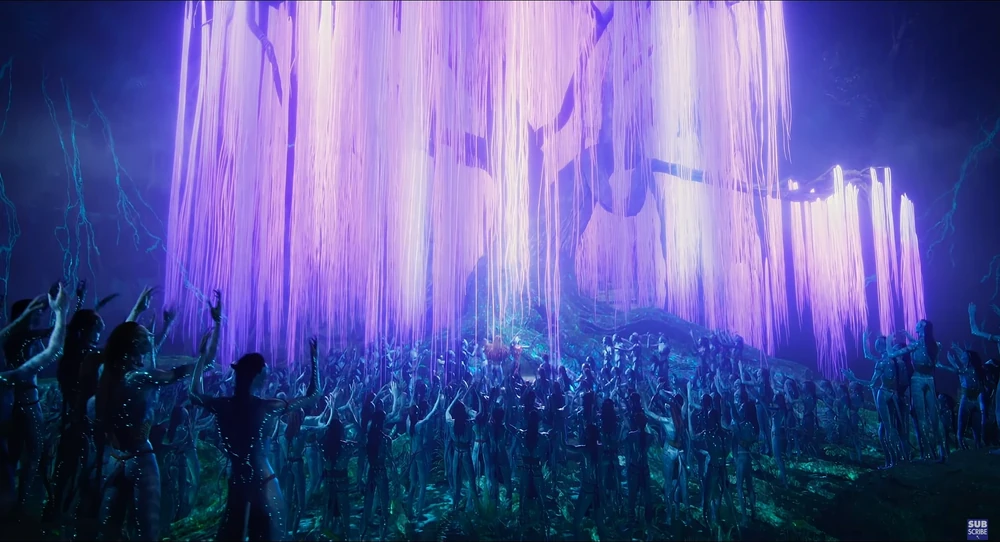
The movie Avatar was a story about our ancient past, and even showed you how our consciousness is beamed through the "avatars" from our real bodies which were laying down plugged into the matrix.
Cameron said in a confidential interview that 60% of Avatar was inspired by real classified documents about the ancient Earth.
Everything in Avatar actually happened. The tree was there, and the RDA (the company) is the same one that cut it down in the 19th century.
The Tree of Souls in Avatar is the real Tree of Life that existed on Earth. Cameron is showing you your past.
The Tree of Souls and the Hometree are remnants of giant silicon trees or crystal trees of life.
The Tree of Souls is very similar to the description in ancient texts (Book of Enoch, Kabbalah, Sumerian mythology) of the Tree of Life that allowed the transfer of the soul.
The Tree of Spirits and the Tree of the House are giant silicon tree trunks from the "Silicon Age" before the Flood or before the "Great Reset" (the old one).
Many of them literally say, "Pandora is Earth," meaning that James Cameron did not invent a new planet, but rather recreated Earth in an era when giant forests were still standing.
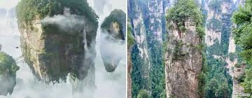
The Hallelujah Mountains are real flat-topped mountains (buttes and mesa) found in China (Zhangjiajie) but are originally cut-down logs, and Cameron deliberately chose them because they resemble old pictures of the land before the forests were cut down.
The tree allows for the transfer of consciousness (consciousness upload/download) because it was originally a "crystalline biological computer" powered by silicon and light, not carbon. This is similar to what happened to Roy Neary in the film Close Encounters of the Third Kind when he experienced visions, or what we might call a transfer of consciousness.
Close Encounters of the Third Kind
Hollywood produced the 1977 film "Close Encounters of the Third Kind" starring Devil's Tower, in which they repeatedly stated that this mountain was a meeting place for extraterrestrial beings.
The tower appears as a mysterious shape that haunts the main characters, especially Roy Neary (Richard Dreyfuss), who has visions of it. Roy begins to draw and sculpt it from clay or even boiled potatoes at the dinner table, alienating his family and driving him to madness. This obsession might be described as a connection between trees and humans, pushing people to connect with trees, particularly giant trees that have witnessed civilizations and periods of time.
Proponents (such as the Flat Earth Society, Mudflood, or UFO Disclosure) view the film as a "soft disclosure" of a secret history, and the choice of the tower is not accidental. They connect it to the "giant silicon trees" theory, where the tower is not volcanic rock but rather a "cut-off giant tree trunk" from the pre-flood era, used as a "cosmic gateway" for giants.
Pictures
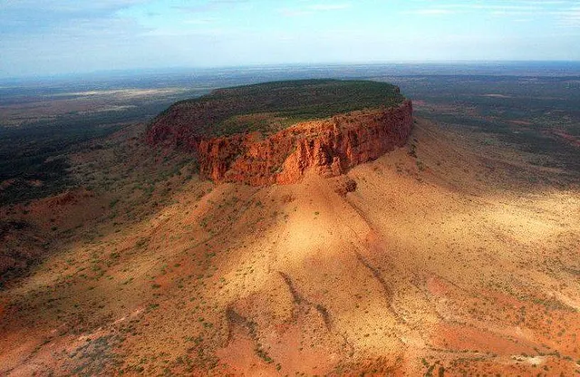

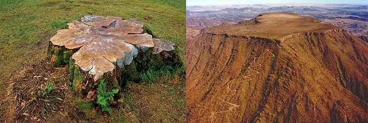
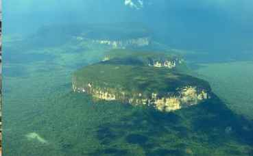
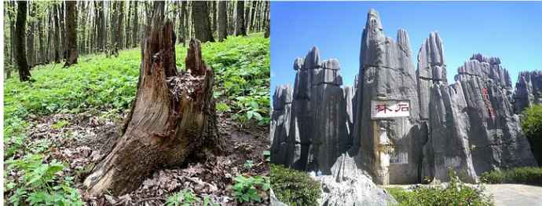